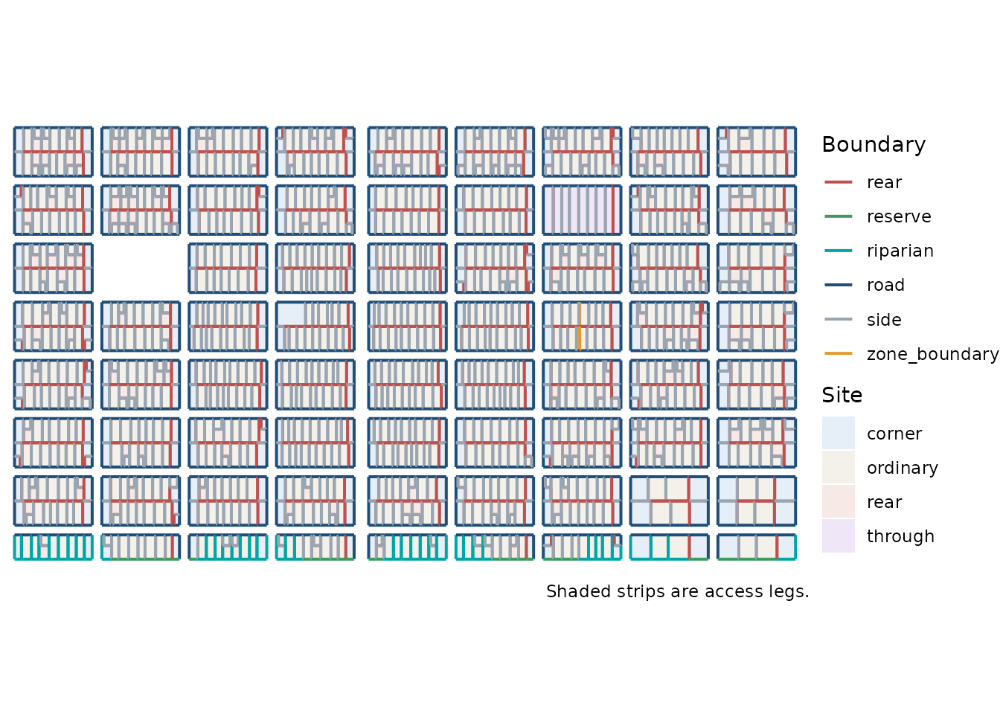

Before any rule applies, plancap has to know what each parcel is: which of its boundaries front a road and which are side or rear boundaries, whether it is a corner, through or rear site, whether it has an access leg, what zone lies across each boundary, and how far it is from features rules refer to. This is site preparation, and most surprises in a capacity run start here, so it is worth checking.
library(plancap)
#>
#> Attaching package: 'plancap'
#> The following object is masked from 'package:stats':
#>
#> density
town <- exampleton()
land <- town$parcels[town$parcels$parcel_type == "land", ]
roads <- town$parcels[town$parcels$parcel_type == "road", ]Two steps, each reused
prepare_sites() works in two steps, each stored under a
hash of its inputs:
- Parcel geometry depends only on parcels, roads, water, road centre lines and the ground: boundary segments and their classes, frontage, corner, through and rear sites, access legs and their widths, road widths, ground levels.
- Plan geometry adds the zoning, overlays and areas: sites split where zones cross them, the zone across each boundary, overlay and area membership, distances to features.
A scenario that changes only rule values reuses both; one that changes the zoning reuses the first.
sc <- scenario("Operative", rulebook_example("exampleton"), parcels = land, roads = roads,
zoning = town$zoning, water = town$water, centrelines = town$road_centrelines)
s <- prepare_sites(sc)
s
#> <plancap sites> Operative: 1379 sites, 5912 boundary segments.
#> Zones: MDR 714, HDR 272, MU 176, LDR 108, TC 85, IND 24.
#> Corner 295, through 9, rear 144 (142 with access legs); split by zone 2.
#> ! adjacency_unresolved: 173
#> ! overlay_layers_missing: height_areas, flood_hazard, heritage, trees
#> ! area_layers_missing: precincts
#> ! distance_layers_missing: transit
table(s$segments$boundary_class)
#>
#> rear road side
#> 1397 1683 2832Classifying boundaries
A boundary segment is a road boundary when at least
half of it runs along a road parcel. The rest are side
or rear: a segment is rear when it is within 30 degrees
of parallel to the frontage and lies at least half the site’s depth back
from it. Tags add what a rule may care about: reserve (open
space across the boundary), riparian, coastal,
lakeside (near water), zone_boundary. Where a
plan says a rear site’s yards are all rear yards (as the Auckland
Unitary Plan does), the morphology setting
rear_site_sides_as_rear makes its side boundaries rear
ones.
The find_*() helpers return each classification with its
evidence:
fr <- find_road_frontages(land[1:200, ], roads)
head(fr[, c("site_id", "segment_id", "boundary_class", "length", "road_shared_length")])
#> Simple feature collection with 6 features and 5 fields
#> Geometry type: LINESTRING
#> Dimension: XY
#> Bounding box: xmin: 2200020 ymin: 5600040 xmax: 2200091 ymax: 5600090
#> Projected CRS: NZGD2000 / New Zealand Transverse Mercator 2000
#> site_id segment_id boundary_class length road_shared_length
#> 1 S000001 S000001-1 road 50.00000 50.00000
#> 2 S000001 S000001-2 road 14.28599 14.28599
#> 6 S000002 S000002-2 road 20.52427 20.52427
#> 10 S000003 S000003-2 road 15.56643 15.56643
#> 14 S000004 S000004-2 road 16.77586 16.77586
#> 18 S000005 S000005-2 road 4.00000 4.00000
#> geometry
#> 1 LINESTRING (2200020 5600040...
#> 2 LINESTRING (2200020 5600090...
#> 6 LINESTRING (2200034 5600090...
#> 10 LINESTRING (2200055 5600090...
#> 14 LINESTRING (2200074 5600090...
#> 18 LINESTRING (2200070 5600090...
corner <- find_corner_sites(land, roads)
table(corner$is_corner)
#>
#> FALSE TRUE
#> 1082 295
rear <- find_rear_sites(land, roads)
table(rear$is_rear)
#>
#> FALSE TRUE
#> 1235 142check_morphology() compares the shares with the ranges
usually seen, and plot_morphology() draws them:
check_morphology(s)
#> Morphology check: 0 measures outside the usual range.
#> measure value usual status
#> sites with no road frontage 0.0% 0-5% ok
#> corner sites 21.4% 2-25% ok
#> through sites 0.7% 0-5% ok
#> rear sites 10.4% 0-30% ok
#> rear sites with an access leg 98.6% 30-100% ok
#> boundary length that is road frontage 19.7% 15-45% ok
#> boundary length that is rear 18.5% 10-35% ok
#> boundaries with no zone across 2.9% 0-5% ok
#> sites with no zone 0.0% 0-1% ok
#> sites split by a zone boundary 0.1% 0-5% ok
Every assumption can be changed
The thresholds behind these calls are settings, with defaults
(morphology_defaults()), overridable in the rulebook
(set_morphology()) or for one run
(scenario(morphology = )):
str(morphology_defaults()[c("road_tolerance", "rear_site_max_frontage", "side_rear_angle_tolerance",
"rear_depth_share", "access_leg_max_width")])
#> List of 5
#> $ road_tolerance : num 0.5
#> $ rear_site_max_frontage : num 7.5
#> $ side_rear_angle_tolerance: num 30
#> $ rear_depth_share : num 0.5
#> $ access_leg_max_width : num 7.5
narrow <- scenario_change(sc, "Wider access legs", morphology = list(access_leg_max_width = 9))
sum(prepare_sites(narrow)$sites$access_leg_area > 0)
#> [1] 142
sum(s$sites$access_leg_area > 0)
#> [1] 142Access to rear sites
A rear site (less road frontage than
rear_site_max_frontage, 7.5 m) is reached by its own
entrance strip, a right of way over a neighbour, or a jointly owned
access lot. find_access_widths() measures all three, given
easement areas (scenario(easements = )) and the other
parcels (scenario(other_parcels = )). A site where nothing
is found has unknown access, not none: the access width table does not
apply and the site is flagged.
Zones across boundaries
Rules often depend on the zone next door (a plane against a lower density zone). The zone across each boundary is found by probing outward from its middle: one metre across a side or rear boundary, across the carriageway for a road boundary.
head(sf::st_drop_geometry(s$segments)[, c("segment_id", "boundary_class", "adjacent_zone_key")])
#> segment_id boundary_class adjacent_zone_key
#> 1 P00001-1 road <NA>
#> 2 P00001-2 road MDR
#> 3 P00001-3 rear MDR
#> 4 P00001-4 side OS
#> 5 P00002-1 side MDR
#> 6 P00002-2 road MDRGround levels
Give a DEM (scenario(dem = )) or ground level tables
(scenario(ground = )) for terrain. Each site’s ground is a
plane fitted to the ground along its boundaries; planes are measured
from the ground at their own boundary.
defaults$terrain = "flat" stands every building on one
floor at the site’s mean ground instead.
Pitfalls
-
Overlapping zone polygons split parcels twice;
check_capacity()reports it as land out exceeding land in. A council layer may hold overlays or a background polygon among its zones (Hamilton’s Transport Corridor Zone covers the whole city): take them out. -
Roads missing from the parcels leave every boundary
a side boundary: check the road share in
check_morphology(). -
Parcels held together (a site on several titles)
can be dissolved into one site with
scenario(group_by = ); pieces of one landholding kept apart share their access withscenario(landholding = ).